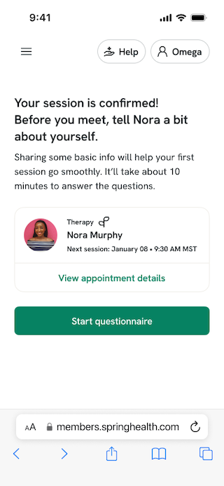
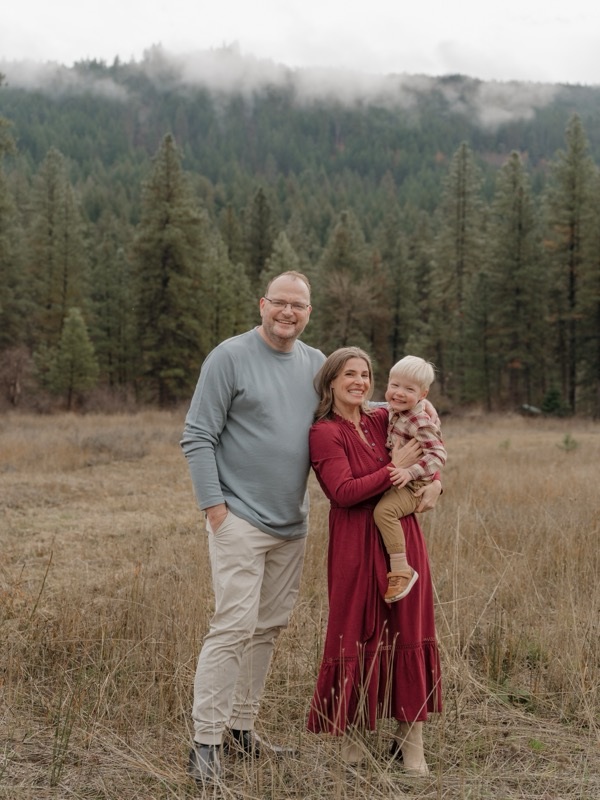

UX writing · Content design · Content strategy
I help people navigate
complex experiences.
10+ years shaping content at Meta, Airbnb, Microsoft, Redfin, and more.
I create content strategies and UX writing for high-stakes moments: mental health support, AI onboarding, crisis intervention. I work best where research, writing, and systems thinking meet.
Where I've worked
Selected work

Improving AI engagement by adding key context
Users were abandoning a new AI-powered therapy intake chatbot at alarming rates. I initiated research to understand why, developed a content strategy around the most hesitant user, and redesigned the entry points.

Connecting people with support that matters most
When a user reported a friend's post that suggested self-injury, the existing experience offered little real support. I partnered with suicidologists, led a research-backed content approach, and wrote all UX copy for the experience.

Improving trust and consistency for member guidance
Spring Health was stitching eight independently-designed AI bots into a single member-facing product. I turned "personality" into a testable product decision, then built the systems to maintain consistency at scale.
About
I'm a UX writer and content strategist with a deep background in design and tech. I tend to find myself in roles where content is genuinely complex — where the stakes are high, the audience is vulnerable, and getting the words right actually matters.
I work best collaboratively, grounding decisions in research, advocating for users, and building the kind of documentation and systems that make content decisions last beyond any one project.
Based in Seattle, WA. Originally from here, with time spent in Australia, Germany, and San Francisco.
Writing
UX copy, content design, voice & tone, writing systems
Research
Usability studies, concept testing, user interviews
AI & systems
Prompt design, AI governance, evaluation rubrics
Tools
Figma, Dscout, UserTesting, LangSmith, ChatGPT, Claude Code

Get in touch
Open to full-time roles in UX writing, content design, and content strategy. Based in Seattle; open to remote.